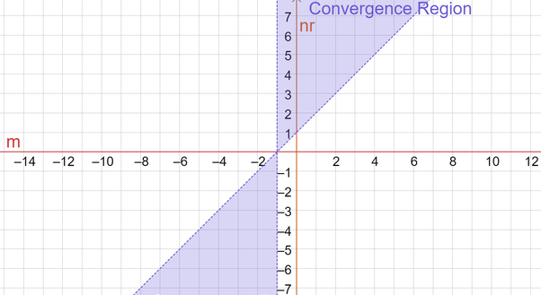

What is the value of
$$ \int_{0}^{\infty}\frac{x^m}{\left(x^n+1\right)^r} \, \mathrm dx $$
for $m,n \in \mathbb{R}$ and $r \in \mathbb{N}$?
Fixing $m,n \in \mathbb{R}$ and $r \in \mathbb{N}$, we want to evaluate
$$ I = \int_{0}^{\infty}\frac{x^m}{\left(x^n+1\right)^r} \, \mathrm dx, $$
in terms of a finite composition of elementary functions.
For case $1$, take $n>0$. Then, we must have $nr>m+1$ and $m>-1$ for convergence as seen below.
We begin with an integral parameterized by $a>0$:
$$ J = \int_{0}^{\infty}\frac{x^m}{x^n+a} \, \mathrm dx, $$
where for symmetry purposes we temporarily let $a=b^n$ then apply the transformation $x=b/w$:
$$ J = \int_{0}^{\infty}\frac{x^m}{x^n+b^n} \, \mathrm dx = \frac{1}{b^{n-m-1}}\int_{0}^{\infty}\frac{w^{n-m-2}}{w^n+1} \, \mathrm dw. $$
We now resubstitute $a$ and for convenience let $p=n-m-2$:
$$ J = a^{m/n+1/n-1}\underbrace{\int_{0}^{\infty}\frac{w^p}{w^n+1} \, \mathrm dw}_{K}. $$
We evaluate $K$. We break it into $2$ intervals, multiply the latter integral by $w^{-n}$, then apply the geometric series to both integrals and evaluate:
$$\begin{aligned} K &= \int_{0}^{1}\frac{w^p}{w^n+1} \, \mathrm dw + \int_{1}^{\infty}\frac{w^{p-n}}{w^{-n}+1} \, \mathrm dw
\\ &= \sum_{j=0}^{\infty}(-1)^j\left(\int_{0}^{1}w^{nj+p} \, \mathrm dw + \int_{1}^{\infty}w^{p-nj-n} \, \mathrm dw\right)
\\ &= \sum_{j=0}^{\infty}(-1)^j\left(\frac{1}{nj+p+1}-\frac{1}{p+1-nj-n}\right).\end{aligned} $$
We now evoke the following series representation for $\csc z$:
$$ \csc z = \sum_{j=0}^{\infty}(-1)^j\left(\frac{1}{z+\pi j} - \frac{1}{z-\pi j - \pi}\right), \, \, \frac{z}{\pi} \notin \mathbb{Z}, $$
where letting $z = \pi (p+1)/n$ and simplifying gives
$$ \csc\frac{\pi (p+1)}{n} = \frac{n}{\pi}\sum_{j=0}^{\infty}(-1)^j\left(\frac{1}{nj+p+1}-\frac{1}{p+1-nj-n}\right). $$
Finally, we multiply both sides of the above by $\pi /n$:
$$ \frac{\pi}{n}\csc\frac{\pi (p+1)}{n} = \sum_{j=0}^{\infty}(-1)^j\left(\frac{1}{nj+p+1}-\frac{1}{p+1-nj-n}\right) = K. $$
Remembering that $p=n-m-2$, we yield
$$ K = \frac{\pi}{n}\csc\frac{\pi (n-m-1)}{n}. $$
Assembling $J$,
$$ J = \int_{0}^{\infty}\frac{x^m}{x^n+a} \, \mathrm dx = \frac{\pi}{n}\csc\frac{\pi (n-m-1)}{n}a^{m/n+1/n-1}, $$
we now differentiate both sides $q$ times with respect to $a$:
$$ \int_{0}^{\infty}\frac{\partial^q}{\partial a^q}\frac{x^m}{x^n+a} \, \mathrm dx = \frac{\pi}{n}\csc\frac{\pi (n-m-1)}{n}\frac{\partial^q}{\partial a^q}a^{m/n+1/n-1}, $$
giving
$$ \int_{0}^{\infty}\frac{(-1)^qq!x^m}{\left(x^n+a\right)^{q+1}} \, \mathrm dx = \frac{\pi}{n}\csc\frac{\pi (n-m-1)}{n}a^{m/n+1/n-1-q}\prod_{k=1}^{q}\left(m/n+1/n-k\right). $$
We rearrange and let $a=1$:
$$ \int_{0}^{\infty}\frac{x^m}{\left(x^n+1\right)^{q+1}} \, \mathrm dx = \frac{(-1)^q}{q!}\frac{\pi}{n}\csc\frac{\pi (n-m-1)}{n}\prod_{k=1}^{q}\left(m/n+1/n-k\right). $$
Finally, we substitute $r=q+1$ to yield (for $n>0$)
$$ I = \int_{0}^{\infty}\frac{x^m}{\left(x^n+1\right)^{r}} \, \mathrm dx = \frac{(-1)^{r-1}}{(r-1)!}\frac{\pi}{n}\csc\frac{\pi (n-m-1)}{n}\prod_{k=1}^{r-1}\left(m/n+1/n-k\right). $$
For case $2$, take $n < 0$. Then, we must have $nr < m+1$ and $m < -1$ for convergence as seen below.
Replacing $x$ with $x^{-1}$ in $I$ yields
$$ I = \int_{0}^{\infty}\frac{x^{-m-2}}{\left(x^{-n}+1\right)^{r}} \, \mathrm dx. $$
Letting $\theta = -m-2$ and $\phi = -n$,
$$ I = \int_{0}^{\infty}\frac{x^\theta}{\left(x^\phi+1\right)^{r}} \, \mathrm dx, $$
we have reduced the problem to that of case $1$:
$$ I = \frac{(-1)^{r-1}}{(r-1)!}\frac{\pi}{\phi}\csc\frac{\pi (\phi-\theta-1)}{\phi}\prod_{k=1}^{r-1}\left(\theta/\phi+1/\phi-k\right). $$
Resubstituting $m$ and $n$ yields (for case $2$)
$$ I = \int_{0}^{\infty}\frac{x^m}{\left(x^n+1\right)^{r}} \, \mathrm dx = -\frac{(-1)^{r-1}}{(r-1)!}\frac{\pi}{n}\csc\frac{\pi (n-m-1)}{n}\prod_{k=1}^{r-1}\left(m/n+1/n-k\right). $$
We conclude that
$$ \int_{0}^{\infty}\frac{x^m}{\left(x^n+1\right)^{r}} \, \mathrm dx = \frac{(-1)^{r-1}}{(r-1)!}\frac{\pi}{|n|}\csc\frac{\pi (n-m-1)}{n}\prod_{k=1}^{r-1}\left(m/n+1/n-k\right), $$
where we have convergence in the shaded region below:

We check our work with $m=2$, $n=4$, and $r=4$:
$$\begin{aligned} \int_{0}^{\infty}\frac{x^2}{\left(x^4+1\right)^4} \, \mathrm dx &= \frac{(-1)^3}{3!}\frac{\pi}{4}\csc\frac{\pi}{4}\left(-\frac{1}{4}\right)\left(-\frac{5}{4}\right)\left(-\frac{9}{4}\right)
\\ &= \frac{15\pi}{256\sqrt{2}},\end{aligned} $$
which is the correct answer.